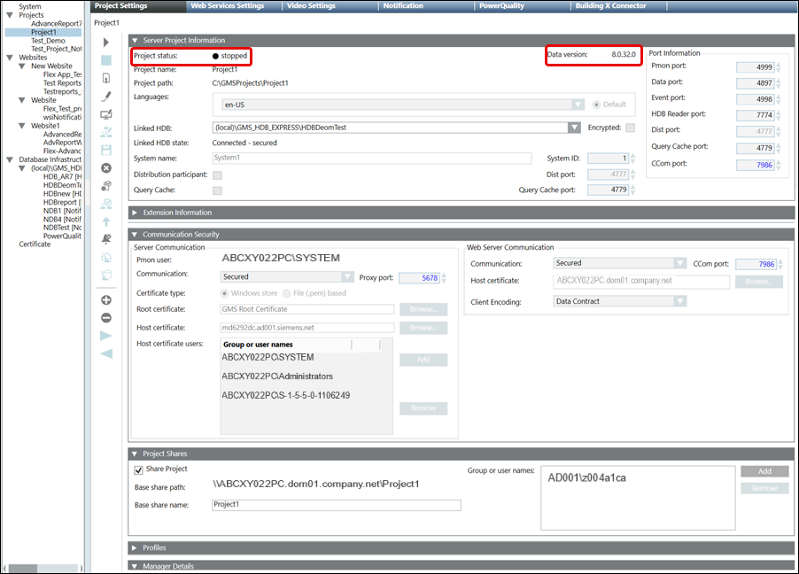

(Optional) Upgrade a Server Project
Use this procedure to upgrade the restored project with a data version less than the current setup data version. For V7.0 the Minimum Upgradable Version is V5.0.
For upgrading the project backups having the data version less than the V2.1, see Upgrade a Server Project having Version 1.0 or 1.1.
Not all outdated projects are upgradable.
If the version of the project backup is too old to upgrade, the Project status after restore is Outdated - Too old to upgrade. When you upgrade such a project, a message informs you accordingly.
If the Project status is Outdated – check on upgrade – inconsistent progs file, see the section Troubleshooting projects.
- You have restored the project with a data version earlier than the current Desigo CC setup data version and in the Server Project Information expander of the Project Settings tab, the Project status is
Outdated(in red) oroutdated - check on upgrade(in red). - You have installed a mandatory extension and the Project status is
Outdated(in red) oroutdated - check on upgrade(in red).
- In the Project Settings toolbar, click Upgrade
 .
. - A confirmation message displays.
NOTE: If the Proxy port (default 5678), of the Server project that you are about to upgrade is already in use, a message displays. - Click OK.
- A message displays if the port numbers of the project you are about to upgrade are in use.
- Click OK.
- Click Edit
 to enable the port fields.
to enable the port fields. - Edit the port numbers according to the given range, ensuring that they are not the same as those of another started project.
- Click Upgrade again.
- After the selected project is successfully upgraded, the status bar displays "Project upgraded successfully" and
Stoppedin the Server Project Information expander.
If Server Project Information expander still displayOutdated(in red), then select corresponding main project node to refresh the project status.
- The project upgrade starts internally. On successful completion the selected project is upgraded to the current data version, the status
Stoppeddisplays in the Server Project Information expander of the Project Settings tab. During project upgrade
- all the existing extensions of the project that are installed, are also upgraded along with its parent extension.
- a newly installed mandatory extension (which was not part of the project earlier) and its parent (mandatory or non-mandatory) extension is also added to the upgraded project.
- if an existing extension is to be carved out into a new extension, then during upgrade the carved out extension is added to the project internally and gets upgraded along with the project upgrade.
- all the global libraries as well as discipline specific libraries are also upgraded.
- the database consistency is checked and is repaired internally.
- the related logs are generated at location ...GmsMainProject/Log/Upgrade/[ProjectName_log].
